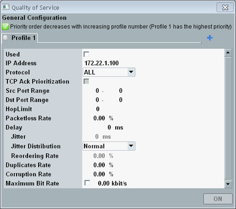

The quality-of-service (QoS) settings apply to IP traffic from the DAU to a specific destination IP address. The destination can, for example, be a DUT or a host at the LAN DAU connector.
You can prioritize the traffic and you can apply network impairments. Real networks are not perfect. IP packets can, for example, be lost, delayed, reordered, duplicated or corrupted. Such network impairments can be simulated by the DAU.
The QoS settings can be configured and controlled from all measurement tabs. Press the "Quality of Service" softkey to open the configuration dialog box.

You can create several profiles (tabs) with different settings. Each profile contains filter settings and settings to be applied to IP traffic that matches the filter settings.
- Gray: profile disabled
- Green: profile enabled, QoS feature deactivated
- Yellow: profile enabled, QoS feature activated
- Highest priority: Traffic that matches the enabled profile with the lowest number
- Second-highest priority: Traffic that matches the enabled profile with the second-lowest number
All enabled profiles build a priority chain, from the profile with the lowest number to the profile with the highest number. - Lowest priority: Traffic that does not match any enabled profile
Example: There are seven profiles. Only the profiles 2, 4 and 7 are used. Traffic that matches the filter settings of profile 2 gets the highest priority. Then comes traffic for profile 4, then traffic for profile 7, finally any other traffic.
The QoS settings are described in the following. For a more detailed description of the network impairment settings, see "Annex: Network Impairments".
creates a tab / profile.
deletes the currently selected tab. Tab 1 cannot be deleted.
Remote command:A profile is only applied if this parameter is enabled.
Remote command:The following settings define a filter. The filter actions are applied to traffic matching the filter criteria.
IPv4 or IPv6 address of the traffic destination
- IPv6 address: fc01:abab:cdcd:efe0::2
- IPv6 prefix: fc01:abab:cdcd:efe0::/64
TCP traffic only, UDP traffic only or no filtering.
Remote command:Specifies a port range used at the DAU ("Src") or at the traffic destination ("Dst"). The port range 0 to 0 disables the filter criterion.
Remote command:The following settings are applied to traffic matching the filter criteria.
This setting is configurable if "Protocol" equals "TCP".
With enabled checkbox, TCP acknowledgments are prioritized over other packets.
Remote command:Number of allowed hops before the packet is discarded.
The QoS feature writes the configured value to the hop limit field (IPv6) or to the time to live field (IPv4) of the packet. If zero is configured, the QoS feature does not modify the packet.
Remote command:On average, the specified percentage of outgoing IP packets is discarded.
Remote command:Delays all outgoing IP packets by the specified time.
Remote command:The jitter specifies a packet delay variation. The maximum accepted jitter value equals the specified delay time.
The distribution of the total delays is defined via the "Jitter Distribution". You can configure a uniform distribution, a normal (Gaussian) distribution, a pareto or a pareto normal distribution.
For details, see "Delay and Jitter".
Remote command:On average, the indicated percentage of outgoing packets is reordered. Reordering is only possible, if a sufficient delay time is specified.
Remote command:On average, the indicated percentage of outgoing packets is duplicated.
Remote command:On average, the indicated percentage of outgoing packets is corrupted, by introducing a single bit error anywhere in the packet (header or payload).
Remote command:Maximum bit rate of the connection. The checkbox enables/disables the limitation.
Remote command:To use the QoS feature, you must configure and enable a profile (one tab) and activate the QoS feature.
You can activate/deactivate the QoS feature via the button "ON/OFF" at the bottom of the configuration dialog box.
You can also right-click the "Quality of Service" softkey. The softkey shows the current state.
Remote command: